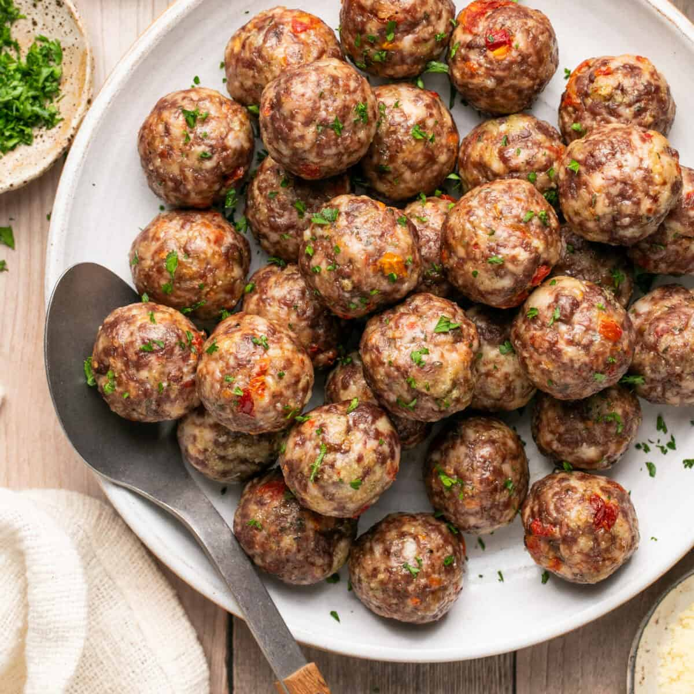

Beef and Chicken Meatballs with Sun-Dried Tomatoes

These meatballs without eggs are juicy, tender and full of flavor. Made with ground chicken, ground beef, breadcrumbs and sun-dried tomatoes, these are the perfect meatballs for fast and delicious weeknight dinners.
Traditional meatballs use eggs as a binding agent, but don't worry with the help of milk and cheese, you'll have great meatballs in no time.